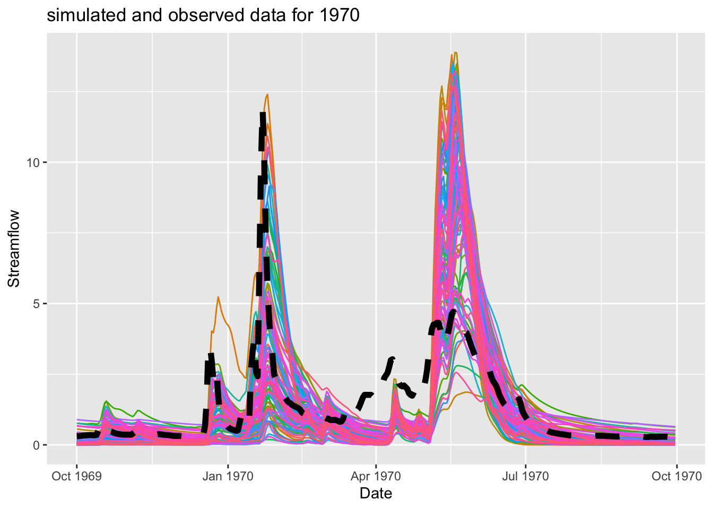
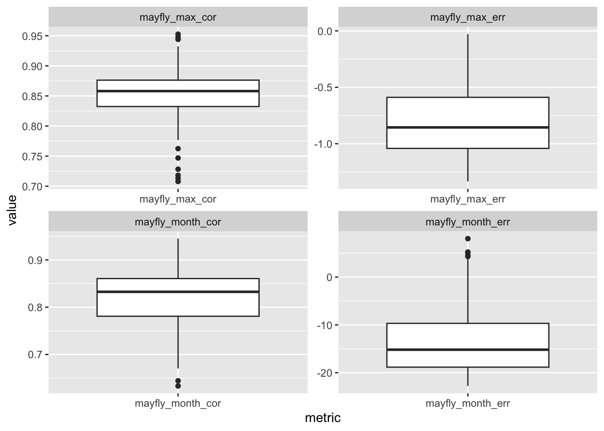
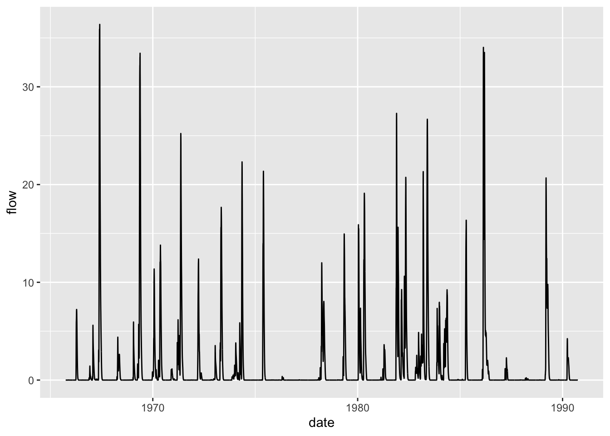

source("flow_metrics_mayflies.R") # this is the function, will implement it in part 2Assignment Calibrate Sagehen streamflow
Ecological Prelude by Caitlin:
(will be part of the paragraph at the end of the assignment, justifies why the month of July and why the max streamflow)
This data is taken from Sagehen Creek field station, a reserve that has a lot of research on birds, particularly interesting to us is the the MAPS program (https://www.birdpop.org/pages/maps.php) which monitors many species of birds to model their populations. Many birds rely on emerging insects, like mayflies, as a food source. Mayflies tend to emerge en mass, so it is vital that the timing of the mayfly emergence lines up with when the bird predators are present, especially for migratory species. Additionally, it has been postulated that a reduced or increased stream flow can trigger changes in when mayflies emerge (a delay or early emergence, respectively). A delayed emergence could be detrimental to the birds relying on the mayfly food source, and thus, we will focus on the instances of high streamflow, the maximum, during the months of ecological relevance to mayfly emergence. Thus, we will be using the streamflow model outputs from the Sagehen creek models to determine which parameter set best predicts the maximum streamflow, and minimized the overall error in prediction of streamflow in the window of mayfly emergence (July)

Note to Kat: If we are feeling fancy, instead of doing the monthly maximum streamflow, maybe we could calculate the deviation from the mean of all years, that would be more ecologically relevant, but less easily to follow along with the example code, so let’s save this as an extra.
Code
Part 1 make the function
Function: flow_metrics_mayflies
Goal: make a function that calculates the percent error of the model and true observations for 2 important indices for mayflies: (1) the entire month of mayfly emergence (2) the maximum water flow within that mayfly month. We will also output the correlation values for both indices.
Question for Kat: is this what the question was asking? I have 4 metrics, and it asked for 2…so hopefully it’s good enough!
Part 2
libraries & data
library(sensitivity)
library(tidyverse)
library(purrr)
library(ggpubr)
# import data (note: I am a disorganized mess and keep everything in one folder so you'll prob have to update your file path)
# for Part 1 and getting data for part 2
sager = read.table("sager.txt", header=T)
msage = read.table("sagerm.txt", header=T)data wrangling
sager wrangling
# add date
sager = sager %>% mutate(date = paste(day,month,year, sep="/"))
sager$date = as.Date(sager$date,"%d/%m/%Y")msage wrangling
# lets say we know the start date from our earlier output, as in lecture
msage$date = sager$date
msage$month = sager$month
msage$year = sager$year
msage$day = sager$day
msage$wy = sager$wy
# let's explore the data
range(msage$wy) # 1966 - 1990 is water year range[1] 1966 1990range(msage$month) # all months, numbered 1-12, so our months of interest will be 6 and 7 (June and July)[1] 1 12# plot our model simulations (code from lecture)
msagel = msage %>% pivot_longer(cols=!c(date, month, year, day,wy), names_to="run", values_to="flow")
# let's look at 1970, because groovy
p1=ggplot(subset(msagel, wy == 1970), aes(as.Date(date), flow, col=run))+geom_line()+theme(legend.position = "none")
# lets add observed streamflow
p1+geom_line(data=subset(sager, wy == 1970), aes(as.Date(date), obs), size=2, col="black", linetype=2)+labs(y="Streamflow", x="Date") + ggtitle("simulated and observed data for 1970")Warning: Using `size` aesthetic for lines was deprecated in ggplot2 3.4.0.
ℹ Please use `linewidth` instead.
split-sample calibration and answers
We are going to pretend we are a lab that only only has data from 1970-1980 years to train our data on.
Outline for this section:
step 0: create a combined metric?? Not sure if this is required or not, instructions unclear
step 1 implement the function
to compute performance measures for all output
res = msage %>% select(-date, -month, -day, -year, -wy ) %>% map_df(flow_metrics_mayflies, o=sager$obs, month=msage$month, day=msage$day, year=msage$year, wy=msage$wy)
summary(res) mayfly_month_err mayfly_month_cor mayfly_max_err mayfly_max_cor
Min. :-22.773 Min. :0.6334 Min. :-1.33457 Min. :0.7079
1st Qu.:-18.847 1st Qu.:0.7809 1st Qu.:-1.04162 1st Qu.:0.8325
Median :-15.191 Median :0.8325 Median :-0.85564 Median :0.8581
Mean :-12.980 Mean :0.8203 Mean :-0.81000 Mean :0.8518
3rd Qu.: -9.680 3rd Qu.:0.8606 3rd Qu.:-0.58912 3rd Qu.:0.8762
Max. : 8.039 Max. :0.9450 Max. :-0.02931 Max. :0.9526 # graph range of performance measures
resl = res %>% pivot_longer(cols=everything(), names_to="metric", values_to="value")
ggplot(resl, aes(metric, value))+geom_boxplot()+facet_wrap(~metric, scales="free")
# assign an identifier to each row, use the same identify for columns of original streamflow data
res$run = seq(from=1,to=nrow(res))
colnames(msage)=c(res$run, "date","month","year","day","wy")
# select the best model for which the error for predicting the maximum water flow is minimized
best = res[which.min(res$mayfly_max_err),]
msagel = msage %>% pivot_longer(cols=!c(date, month, year, day,wy), names_to="run", values_to="flow")
ggplot(subset(msagel, run == best$run), aes(date, flow)) + geom_line()
## best is run 8!step 2: do this for the split-sample calibration
(only 1970 - 1980), see lecture slide 33, I believe this will fulfill the requirement “Compute and plot how the performance of the model using the best parameter set changed in pre and post calibration periods (that you chose)” but I am not totally clear on the instructions
step 3: determine the best AND worst model
using similar code above (and on slide 41), input the best into the portal on Canvas
step 4: “Graph something about streamflow…
…(e.g daily, mean August, or ?) for the best parameter set”, I was thinking of maybe something where we can visualize the date the x axis, but it is only for July (maybe facet by year? what do you think?) and the flow predictions on the y axis and a line for the observed values as well (similar to the plot on slide 41).
step 5: Write 2-3 sentences
to explain your metric design and comment on model performance based on your metric
Here is my beginning, mainly metric justification:
This data is taken from Sagehen Creek field station, a reserve that has a lot of research on birds, particularly interesting to us is the the MAPS program (https://www.birdpop.org/pages/maps.php) which monitors many species of birds to model their populations. Many birds rely on emerging insects, like mayflies, as a food source. Mayflies tend to emerge en mass, so it is vital that the timing of the mayfly emergence lines up with when the bird predators are present, especially for migratory species. Additionally, it has been postulated that a reduced or increased stream flow can trigger changes in when mayflies emerge (a delay or early emergence, respectively). A delayed emergence could be detrimental to the birds relying on the mayfly food source, and thus, we will focus on the instances of high streamflow, the maximum, during the months of ecological relevance to mayfly emergence. Thus, we will be using the streamflow model outputs from the Sagehen creek models to determine which parameter set best predicts the maximum streamflow in the window of mayfly emergence (June-July)
Caitlin to insert information on the model performance based on our metric here when we have finished
Instructions & notes
Part 1: Come up with a combined metric that you think is interesting
- if you can, try to include at least one metric (as part of your combined metric) that needs to be transformed be creative you can subset, aggregate, focus only on particular type of years or days
Here, we will use the maximum streamflow events from the months of ecologcial relevance for mayfly emergence (June and July).
Our metrics will be:
1: the model error in predicting the monthly maximum streamflow over the months June and July
2: Something else, maybe the model error in something else? Or maybe one of the classic ones like NSE? but if we do model error then they will be in the same units and easier to combine… maybe here is where we do the deviation from the juneJuly mean across all years?
Part II
Perform a split-sample calibration on the Sagehen model output (sagerm.txt) you can decide what years to pick for pre and post calibration use your performance metric from Part I
Find the best and worst parameter set, given your performance metric Graph something about streamflow (e.g daily, mean August, or ?) for the best parameter set
* Compute and plot how the performance of the model using the best parameter set changed in pre and post calibration periods (that you chose)
Add the ‘best’ parameter set column number number to the quiz linked below (so we can compare how different metrics influence which parameter you pick)
Write 2-3 sentences to explain your metric design and comment on model performance based on your metric Use to Best Parameter (Column) to record your ‘best’ parameter sets